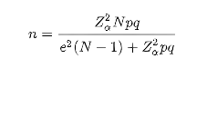
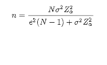

Ya teniendo las nociones básicas sobre lo que trata esta materia, vamos a adentrarnos mas en conceptos fundamentales de la misma.
Índice de contenido:
1.Inferencia o Estadística Inferencial: Generalidades.
Primero que nada, antes de entrar en materia debemos entender de donde nace la inferencia o estadística inferencial y para eso debemos conocer lo que es la estadística.
Según el diccionario de español de la universidad de Oxford se define como “Ciencia que utiliza conjuntos de datos numéricos para obtener, a partir de ellos, inferencias basadas en el cálculo de probabilidades.” Es decir, es una disciplina científica que se ocupa de la obtención, orden y análisis de un conjunto de datos con el fin de obtener explicaciones y predicciones sobre fenómenos observados.
La Estadística se divide en dos grandes ramas lo que es la estadística descriptiva y la estadística inferencial. La estadística descriptiva describe, analiza y representa un grupo de datos utilizando métodos numéricos y gráficos que resumen y presentan la información contenida en ellos.
Pero sin embargo en ocasiones no se puede observar a todos los datos o población en estudio (por motivos económicos o por lo grande que es la población, aunque no siempre es así.) por lo que da partida a lo que se conoce como inferencia estadística.
Esta se puede definir como el conjunto de métodos y técnicas que a partir de una parte de esta (muestra) determina propiedades, datos, comportamiento o cualquier otro parámetro deseado en el estudio.
Como antes mencione la estadística inferencial tiene como objetivo la consecución de datos del estudio de una muestra de una población determinada, por ejemplo, aplica diferentes tamaños muéstrales para obtener datos más precisos con respecto a la confianza y el error de los resultados del estudio.
La inferencia estadística utiliza dos métodos principalmente (aunque existen muchos más que más adelante serán mencionados en otros temas) para la obtención de los datos a partir de las muestras los cuales son:
- Estimación puntual: Esta consiste en aproximar al valor más exacto un parámetro en estudio (cuantos autos existen en una determinada ciudad o cuantos bilingües existen en un país). Algunos ejemplos de métodos matemáticos usados para esta técnica son: media muestral, cuasi-varianza muestral, proporción muestral, etc.
- Estimación por intervalos: La estimación por intervalos consiste en establecer el intervalo de valores donde es más probable se encuentre el parámetro.
2. Diseño de experimentos.
Los experimentos son parte fundamental de muchísimas ciencias y forman parte esencial de la búsqueda del conocimiento. Estos se realizan con la intención de generar conocimiento en un fenómeno determinado de estudio y usualmente estos se suelen realizar con el método científico.
Pero en comienzos del siglo XX El matemático Ronal Fisher decidió combinar la estadística y el diseño de experimentos, aunque no fue hasta los años de 1930 que se empezó a utilizar en distintas industrias.
Lo que hoy se conoce como diseño experimental, se trata de una técnica que pertenece al ámbito de la estadística y que también se suele usar en ingeniería que permite valorar las causas y los efectos que tiene una variable sobre otra dentro de una investigación experimental.
Él investigador al aplicar esta técnica modifica intencionalmente la variable independiente para cuantificar los efectos que ella tiene en la variable dependiente. Básicamente el diseño experimental lo que busca es determinar el cambio que se da en una variable en estudio como consecuencia de modificar la otra. Es una especie de relación causa y efecto y como es en bien sabido en el diseño de experimentos siempre se estudian principalmente dos variables involucradas, la variable independiente (causa) y la dependiente (efecto) para poner esto un poco más en contexto imagine, por ejemplo
Una empresa que desea lanzar al mercado una nueva línea de taladros y tienen 5 materiales a disposición para la fabricación del mismo por lo cual para tomar la decisión realizan un diseño experimental con el objetivo de probar los 5 materiales y conocer la opinión del desempeño (sí tiene buen rendimiento) del material con el cual cada taladro fue fabricado. En este ejemplo la variable independiente es el material (causa) y la dependiente la cual nunca se ve modificada es el desempeño del material con el cual el taladro fue fabricado
Existen principalmente dos tipos de diseños experimentales, el primero es el pre-experimental que consiste en hacer un acercamiento a la variable independiente y analizar su comportamiento y el otro es el diseño experimental propiamente dicho donde se procede con las modificaciones de la variable independiente.
Un experimento de este tipo se puede realizar por diversas razones, dependiendo de la necesidad del investigador y hay que tener en cuenta que en este proceso de realización intervienen distintos factores como lo son: la unidad experimental que es el objeto que es capaz de medir una medición de la variable de respuesta, los niveles que son los diferentes valores que se le asignan a cada valor estudiado, el error que son esas pequeñas diferencias que existen entre el valor observado y el exacto entre cada medición.
Como pueden ver esto es un tema bastante amplio lo cual tratar de contemplarlo completamente es realmente complicado, por lo cual pueden revisar los libros que se encuentran en la página para indagar más sobre este tema. Por los momentos procederemos con las etapas del diseño experimentos.
3. Etapas del diseño de experimentos.
Primero que nada, hay que recalcar que distintos autores definen de manera distinta las etapas de los diseños de experimentos (Doe) aunque todos en general tienen las mismas matices procederemos a explicar principalmente 4 etapas del diseño de experimento.
- 3.1 Definición del Problema.
-
Como es lógico debemos comenzar primero definiendo el problema, conocer sus matices, tener claros los objetivos, limitaciones y todos los factores involucrados en el mismo que puedan afectar u aporten información para el experimento a realizar.
Puesto que en muchas ocasiones los recursos serán limitados y siempre debemos apuntar a la eficiencia es primordial tener bien formadas las bases del problema. Un problema bien propuesto tiende a producir más información y de una manera mucha más clara que se traduce en una mejor evaluación de lo que usted considere como importante.
- 3.2 Diseño Experimental y Recolección de Datos.
Esta etapa es una de las más importantes debido a que aquí es donde se diseña el experimenta y se recolecta los datos para este, por lo cual es importante realizar los siguientes procesos:
- Definición de variables: Identificar, describir y definir la variable dependiente e independiente y cualquiera otra variable que se pueda encontrar en el experimento.
- Identificar fuentes de variación: Identificar los niveles, las unidades experimentales, entre todos aquellos otros factores involucrados.
- Técnicas: Definir e identificar todas las técnicas y medidas que se emplearan para la recolección de datos y sus análisis.
- Planeación del diseño experimental: Por último se debe organizar y planear el experimento en base al problema definido anteriormente y teniendo en cuenta los datos, variables y todos aquellos factores involucrados en el experimento.
- 3.3 Organización y Presentación de los Datos.
Esta etapa se comprende en dos procesos principalmente:
- Organización: En ese punto lleva acabo todo el proceso de optimización, organización y análisis de los datos recolectados, se debe determinar la mejor técnica estadística que describa el comportamiento de los datos.
- Presentación de datos: Ahora se deben presentar todos los datos, organizados, analizados, optimizados con todos los procesos, factores involucrados, datos y técnicas estadísticas que utilizaran para el experimento y su inferencia.
- 3.4 Inferencia y Formulación de la Respuesta.
En este punto se realiza la inferencia para la posterior presentación de la respuesta. Recordamos que la inferencia explicada un poco más arriba es el proceso definir como el conjunto de métodos y técnicas que a partir de una parte de esta (muestra) determina propiedades, datos, comportamiento o cualquier otro parámetro deseado en el estudio. En pocas palabras la ejecución de las técnicas estadísticas seleccionadas con sus datos recolectados en todas las etapas anteriores.
Una vez que se ha realizado la inferencia se procede a interpretar los resultados y formular la respuesta sobre la cual se fundamentó dicho experimento, también se deben realizar pruebas de confirmación para validar las conclusiones del experimento.
4. Recolección de datos e información
Como es bien sabido en cualquier experimento que vayamos a realizar los datos son la base central en la cual trabajamos, sin los datos no tenemos nada y parte del proceso de los diseños experimentales es la recolección de datos y evidentemente es una etapa fundamental de cualquier experimento que debe realizarse con los mejores métodos adaptados a nuestra problemática.
Formalmente podríamos definir la recolección de datos como el proceso donde las personas encargadas del experimento obtienen la información necesaria para los objetivos de su experimento y estos datos pueden ser variados tales como hechos, cifras, objetos, símbolos y eventos que pueden ser recolectados de diferentes fuentes.
Estos datos pueden venir de distintas fuentes de información y es importante mencionar que algunos autores pueden ubicarlos en cuantitativos (uso de números) o cualitativos (cualidades) aunque nos enfocaremos principalmente en los métodos mas conocidos sin tener en cuenta estos factores. Podemos mencionar las siguientes fuentes de recolección de información:
- Encuestas.
- Sondeos.
- Entrevistas.
- Focus group.
- Cuestionario.
Existen otros métodos alternativos como pueden ser informes de ventas de una empresa, registros de un gobierno, estados financieros, entre otros. Por ejemplo, un método actualmente utilizado en diversos análisis desde hace varios años son las páginas webs. Herramientas como Google Analyctics permite a empresas a nivel mundial recolectar datos que estén disponibles en internet sobre el tráfico e interacción de sus sitios y productos.
Es de recalcar que métodos como este no existían hace muchos años, por lo cual los métodos de recolección de datos pueden variar y existen diversas fuentes para estos, por lo cual si estas interesado en saber más puedes consultar los libros recomendados en nuestra página sobre el tema de estadística inferencial.
Ahora bien, sabiendo esto ¿Cómo se recolectan los datos? Estos métodos son variados y van íntimamente atados a la naturaleza del estudio debido a que hay métodos que se adaptan de mejor manera a distintos experimentos, pero antes de llegar a ese punto necesitamos definir ciertos conceptos como muestras y población, recordando que en la estadística inferencial trabajamos con muestras:
- Población: Una población es todo el conjunto de individuos, datos, hechos, cifras o todo aquel dato que forme parte del objeto de estudio. Es importante recalcar que existen “dos tipos” de población los cuales son la infinita que comprende una población que no se puede medir (por ejemplo, estrellas en el universo) y las finitas que son aquellas que si podemos medir.
- Muestra: La muestra no es más que en un subconjunto de datos (Una parte de los datos) perteneciente a la población en estudio y esta debe representar de manera la mejor manera el total de los datos.
- Muestreo: El muestreo es el proceso por el mediante el cual se recolectan los datos y para esto se poseen diversas técnicas como se fue mencionado un poco antes.
En este punto es importante hablar sobre cómo se realiza el muestreo y que tipos de nuestros existen, debido a que es con lo que la estadística inferencial trabaja.Existen principalmente dos tipos de muestreo que a su vez se dividen en otros, estos son:
Muestreo probabilístico: En este tipo de muestreo se selecciona a las muestras de manera aleatoria por lo cual todos tienen la misma posibilidad de ser seleccionados. Este se divide a su vez en:
- Muestro aleatorio simple: Consiste en elegir a los datos completamente al azar.
- Muestreo sistemático: Este método elige de forma aleatoria al primer individuo y luego se define un intervalo para completar el muestreo.
- Muestreo estratificado: En este tipo de muestreo se dividen a la población en grupos que compartan determinadas características para luego seleccionar miembros al azar de cada grupo.
- Muestro por conglomerados: Este usualmente se utiliza cuando es imposible tratar de elaborar una lista de la población, aunque estos tienden estar ya separados en grupos o conglomerados.
Muestreo no probabilístico: Por ultimo tenemos la rama del muestro no probabilístico que se basa en la selección de la muestra de manera subjetiva, es decir, según la decisión propia de quien realice la investigación. De este se desprenden los siguientes tipos:
- Muestro por cuota: Consiste en incluir en la muestra solo un grupo que cumpla con características determinadas como puede ser la edad o el sexo. Muestreo intencional o por conveniencia: Aqui el investigador selecciona la muestra considerando solamente sus criterios para lo que es mejor para el experimento.
- Muestreo discrecional: Es muy parecido al intencional solo que aquí busca lo que este grupo seleccionado (en base a su conocimiento) para a muestra puede aportar.
- Muestreo por bola de nieve: Por último en esta técnica consiste en contactar a un sujeto de una muestra y que este le proporcione mas información para encontrar posibles sujetos que formen parte de esta muestra. Este método generalmente es aplicado cuando es difícil ubicar la población de estudio.
En cuanto a las herramientas disponibles para la recolección de datos pueden ser de distintos tipos , desde cuestionarios en internet, formularios en tiendas, bases de datos de empresas, registros contables, etc. Evidentemente esto puede variar según la naturaleza del experimento y de donde se encuentre la información a recolectar.
Teniendo en cuenta lo antes mencionado, existe un punto que no hemos tocado y es ¿Cómo sé qué tamaño de muestra debo seleccionar? Pues realmente es bastante fácil. Para saber el tamaño de la muestra a estudiar basta con aplicar la formula a continuación.
Primero tenemos que tener en cuenta la desviación estándar de la población, si esta se desconoce se procede con la siguiente formula:

Donde:
- n: Tamaño de la muestra
- N: tamaño de la población.
- z: parámetro estadístico que depende del nivel de confianza, este valor lo asigna el investigador y este indica la probabilidad de que los resultados de la investigación sean ciertos.
- e: Es el margen de error aceptado, es esa diferencia que puede haber entre el resultado que obtenemos preguntando a una muestra de la población y el que obtendríamos si preguntáramos al total de ella. Esta se representa de manera porcentual y de igual manera es elegida por el investigador.
- p: cantidad de individuos de la muestra que poseen la característica de estudio y se suele suponer 0.05 debido a que tiende a ser la opción más segura.
- q: proporción de individuos que no poseen la característica de estudio.
Ahora cuando se conocer la desviación estándar de la población, la fórmula es la siguiente:
